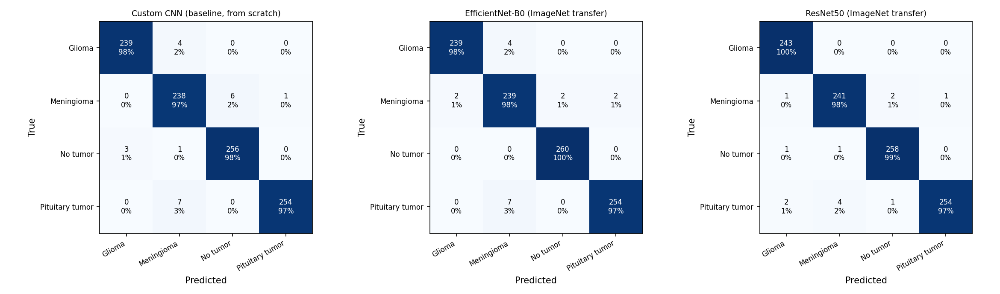
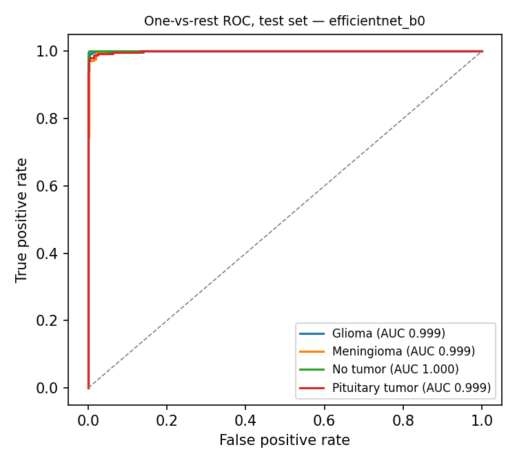
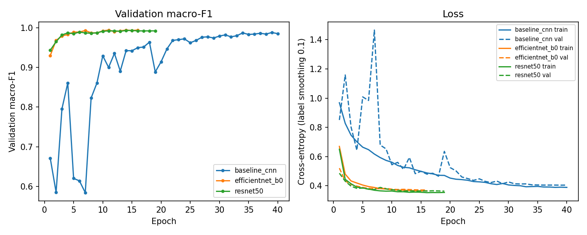
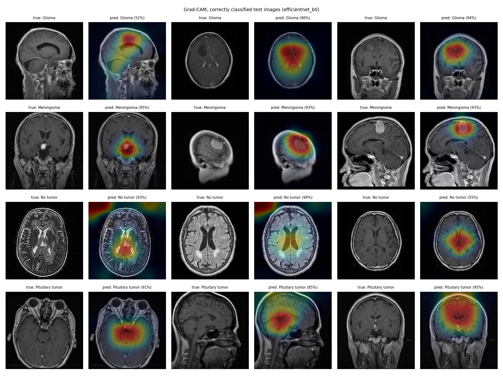

1. Patient Selection & Intake
2. Submit MRI Scan
Drag & drop MRI slice here
or browse local file (JPEG, PNG T1/T2 axial slices)
Diagnostic Findings & Explainability
Awaiting ScanReady for Diagnostic Analysis
Select a clinical demo MRI slice above or upload a patient scan to evaluate multi-class tumor probability and generate Grad-CAM saliency localization.
Patient Intake Registry & Diagnostic History
| Scan ID | Patient ID / Name | Age / Gender | Predicted Diagnosis | Confidence | Exam Date | Actions |
|---|---|---|---|---|---|---|
| Loading diagnostic history... | ||||||
Test Confusion Matrix (Held-out 1,009 scans)

Multi-Class ROC Curves

Training & Validation Curves

Grad-CAM Verification on Test Cases

Dataset & Leakage-Safe Splitting
The Kaggle Brain Tumor MRI Dataset contains 7,023 images. Direct inspection revealed 297 byte-identical duplicates and 327 duplicate clusters that crossed the original Train/Test split folders.
- Deduplication: Exact duplicate removal + perceptual hash clustering.
- Stratified Split: 70% Train, 15% Validation, 15% Test grouped by patient/cluster seed.
- Normalization: Grayscale conversion with aspect-ratio preserved padding to 224 × 224 pixels.
Model Architecture & ONNX Optimization
We evaluated three architectures: a 4-block custom CNN, EfficientNet-B0 (ImageNet transfer), and ResNet-50. EfficientNet-B0 was selected for deployment due to superior parameter efficiency (4.0M params).
- Embedded Grad-CAM: Class activation maps computed inside the computational graph without autograd dependencies.
- Out-of-Distribution (OOD): Mahalanobis distance scoring flags non-MRI images or artifacts.
- ONNX Runtime: 96 ms CPU execution latency on standard server hardware.
Explainability & Clinical Safety
Automated deep learning systems in radiology require interpretable saliency maps so clinicians can cross-verify whether the model recognized anatomical pathology rather than imaging artifacts.
- Grad-CAM Saliency: Identifies focal regions influencing class logits.
- Attention Description: Quantifies coverage percentage and anatomical centroid.
- Clinical Safeguard: Flags low-confidence predictions (< 60%) and out-of-distribution scans.
Open Source Repository
Complete source code, training scripts, FastAPI backend, Dockerfile, evaluation reports, and ONNX models are version-controlled on GitHub.